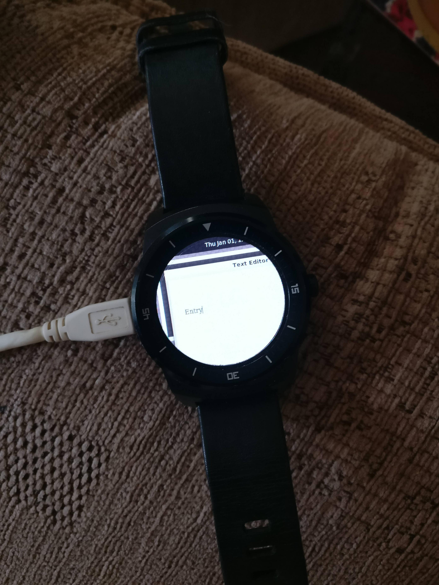

LG G Watch R (lg-lenok)
|
 LG G Watch R running the weston demo | |
| Manufacturer | LG |
|---|---|
| Name | G Watch R |
| Codename | lg-lenok |
| Released | 2015 |
| Category | testing |
| Original software | Android Wear |
| Original version | 1.0 and 2.0 |
| Hardware | |
| Chipset | Qualcomm Snapdragon 400 (APQ8026) |
| CPU | Quad-core 1.2 GHz Cortex-A7 |
| GPU | Adreno 305 |
| Display | 320x320 P-OLED |
| Storage | 4 GB |
| Memory | 512 MB |
| Architecture | armv7 |
| Type | watch |
{kind=link}
| USB Networking |
Works
|
|---|---|
| Flashing |
Works
|
| Touchscreen |
Works
|
| Display |
Works
|
| WiFi | |
| FDE | |
| Mainline |
Works
|
| Battery | |
| 3D Acceleration | |
| Audio |
Unavailable
|
| Bluetooth | |
| Camera |
Unavailable
|
| GPS |
Unavailable
|
| Mobile data |
Unavailable
|
| SMS |
Unavailable
|
| Calls |
Unavailable
|
| USB OTG | |
| NFC |
Unavailable
|
| Accelerometer | |
|---|---|
| Magnetometer | |
| Ambient Light | |
| Proximity | |
| Hall Effect | |
| Barometer | |
| Power Sensor | |
| Camera Flash | |
|---|---|
| Keyboard | |
| Touchpad | |
| USB-A | |
| HDMI/DP | |
| Ir TX |
Unavailable
|
| Ir RX | |
| Stylus | |
| Haptics | |
| Ethernet | |
| FOSS bootloader | |
Contents
Contributors
- Bloo
- drebrez
- ollieparanoid
- ata2001
- opendata
- z3ntu
Entering Fastboot mode
Turn on your watch and swipe from the top left corner (so thatd be where 11 would be on the watch) as soon as you see the LG logo.
Preperation
- Add
deviceinfo_flash_sparse="true"the deviceinfo file - Replace sshd with dropbear as seen in the USB_Network page
Installation
First build the image:
$ pmbootstrap init
$ pmbootstrap install
Then in order to flash it put your device in fastboot mode, and plug it in USB. Then do:
$ pmbootstrap flasher flash_rootfs --partition userdata
$ pmbootstrap flasher flash_kernel
We flash to the `userdata` partition as the system partition is not big enough for postmarketOS.
You can then either reboot or run fastboot continue to boot into postmarketOS.
UART
UART is multiplexed on the USB port. The watch has five pads that are directly connected to the docking station's USB connector. This makes it possible to build a custom cable that just plugs into the dock to read the UART output, no resistor needed. Neat!
Pin order is the following, when looking at the docking station from the top, USB cable on the left:
| TOP | GND | GND |
| 2 | ID | |
| 3 | D+ | UART TX |
| 4 | D- | |
| BOTTOM | VCC |
According to the kernel code, there seems to be some code checking if v(USB id) is about 900 mV
before muxing UART to the USB connector, and an extra command line parameter, uart_console=enable might have to be enabled to output the kernel messages.
Still according to that code, adding lge.earjack-debugger=always seems force muxing without applying a voltage on the id pin. Despite this, logging seems to always be enabled, and none of the above is necessary when connected to a test circuit with just GND and TX.
The following is the complete early boot sequence captured at 115200 bauds. UART output seems to be enabled by default during early boot, so applying a specific voltage to the ID pin is not needed. Note that you will need to keep the power button pushed until "welcome to lenok bootloader" appears, otherwise the boot process is interrupted.
Format: Log Type - Time(microsec) - Message
Log type: B - since boot(excluding boot rom). D - delta
B - 168756 - SBL1, Start
B - 174002 - scatterload_region && ram_init, Start
D - 30 - scatterload_region && ram_init, Delta
B - 189527 - pm_device_init, Start
D - 16775 - pm_device_init, Delta
B - 216428 - volume_down: not pressed
B - 216824 - boot_flash_init, Start
D - 20587 - boot_flash_init, Delta
B - 247812 - volume_down: not pressed
B - 247843 - boot_config_data_table_init, Start
D - 0 - boot_config_data_table_init, Delta
B - 254248 - sbl1_ddr_set_params, Start
B - 257999 - Pre_DDR_clock_init, Start
D - 183 - Pre_DDR_clock_init, Delta
D - 0 - sbl1_ddr_set_params, Delta
B - 272395 - pm_driver_init, Start
D - 24186 - pm_driver_init, Delta
B - 296765 - clock_init, Start
D - 213 - clock_init, Delta
B - 315919 - Image Load, Start
B - 416203 - Tz Execution, Start
D - 133773 - Tz Execution, Delta
B - 551043 - Image Load, Start
B - 616984 - Signal PBL to Jump to RPM FW
B - 1546380 - Image Load, Start
B - 1547234 - hw_rev adc result:1791
B - 1547936 - Cable ADC: 1749
B - 1549430 - charger type: non DCP
B - 1553609 - hw_rev adc result:1791
B - 1556293 - [bq27421] config params start
B - 1622905 - [bq27421] config params end
B - 1622966 - Image Load, Start
B - 1727733 - sbl1_efs_handle_cookies, Start
D - 335 - sbl1_efs_handle_cookies, Delta
B - 1729716 - RPM sync cookie updated
B - 1734748 - qfuse: fusing unFlaged
B - 1736761 - SBL1, End
welcome to lenok bootloader
[0] Power on reason 80
[10] platform_init()
[90] touch synaptics: touch_poll init
[140] Done initialization of the card
[160] Loaded IMGDATA at 0x8000000
[170] LCD: 320P OLED cmd panel
[170] bpp 24
[220] Config MIPI_CMD_PANEL.
[400] Turn on MIPI_CMD_PANEL.
[440] cable type from shared memory: 10
[440] reboot_mode restart reason = power_on
[490] splash: boot
[1530] use_signed_kernel=0, is_unlocked=0, is_tampered=0.
[1530] Loading boot image (15646720): start
[1660] Loading boot image (15646720): done
[1660] Found Appeneded Flattened Device tree
[1670] DTB: platform id 199, board id 132, soc rev 20000, board rev 10
[1680] get_display_kcal = 0, 0, 0, x
[1680]
Booting Linux
[3680] Updating device tree: start
[3760] Updating device tree: done
[3770] Turn off MIPI_CMD_PANEL.
[3770] Continuous splash enabled, keeping panel alive.
[3770] booting linux @ 0x8000, ramdisk @ 0x2000000 (1246306), tags/device tree @ 0x1e00000Internal storage
$ ls -al /dev/block/platform/msm_sdcc.1/by-name/
drwxr-xr-x 2 root root 480 Jan 1 05:08 .
drwxr-xr-x 4 root root 560 Jan 1 05:08 ..
lrwxrwxrwx 1 root root 21 Jan 1 05:08 DDR -> /dev/block/mmcblk0p18
lrwxrwxrwx 1 root root 20 Jan 1 05:08 aboot -> /dev/block/mmcblk0p5
lrwxrwxrwx 1 root root 20 Jan 1 05:08 abootb -> /dev/block/mmcblk0p9
lrwxrwxrwx 1 root root 21 Jan 1 05:08 boot -> /dev/block/mmcblk0p15
lrwxrwxrwx 1 root root 21 Jan 1 05:08 cache -> /dev/block/mmcblk0p20
lrwxrwxrwx 1 root root 21 Jan 1 05:08 grow -> /dev/block/mmcblk0p22
lrwxrwxrwx 1 root root 21 Jan 1 05:08 imgdata -> /dev/block/mmcblk0p10
lrwxrwxrwx 1 root root 21 Jan 1 05:08 laf -> /dev/block/mmcblk0p14
lrwxrwxrwx 1 root root 21 Jan 1 05:08 metadata -> /dev/block/mmcblk0p11
lrwxrwxrwx 1 root root 21 Jan 1 05:08 misc -> /dev/block/mmcblk0p12
lrwxrwxrwx 1 root root 21 Jan 1 05:08 persist -> /dev/block/mmcblk0p13
lrwxrwxrwx 1 root root 21 Jan 1 05:08 recovery -> /dev/block/mmcblk0p16
lrwxrwxrwx 1 root root 20 Jan 1 05:08 rpm -> /dev/block/mmcblk0p2
lrwxrwxrwx 1 root root 20 Jan 1 05:08 rpmb -> /dev/block/mmcblk0p7
lrwxrwxrwx 1 root root 20 Jan 1 05:08 sbl1 -> /dev/block/mmcblk0p1
lrwxrwxrwx 1 root root 20 Jan 1 05:08 sbl1b -> /dev/block/mmcblk0p6
lrwxrwxrwx 1 root root 20 Jan 1 05:08 sdi -> /dev/block/mmcblk0p4
lrwxrwxrwx 1 root root 21 Jan 1 05:08 ssd -> /dev/block/mmcblk0p17
lrwxrwxrwx 1 root root 21 Jan 1 05:08 system -> /dev/block/mmcblk0p19
lrwxrwxrwx 1 root root 20 Jan 1 05:08 tz -> /dev/block/mmcblk0p3
lrwxrwxrwx 1 root root 20 Jan 1 05:08 tzb -> /dev/block/mmcblk0p8
lrwxrwxrwx 1 root root 21 Jan 1 05:08 userdata -> /dev/block/mmcblk0p21
Note, that the system partition is a squashfs image and needs to be mounted differently compared to ext4 or f2fs.